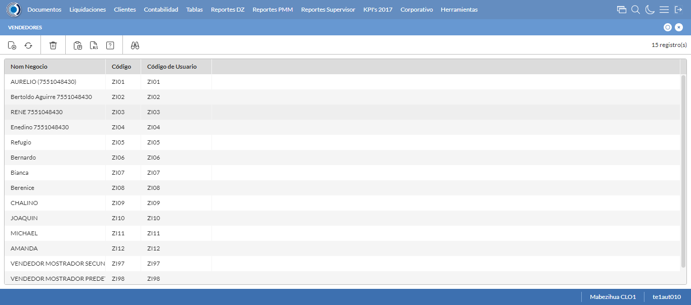
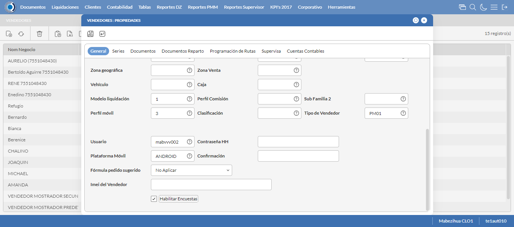
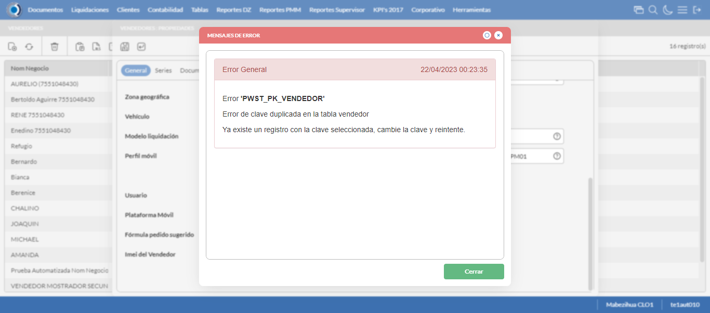
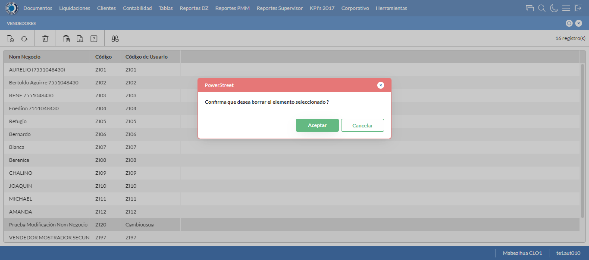

Desarrollado por : Area de Testing PWST
Fecha y hora de inicio : 2023-04-21 18:21:10
Duracion : 0:03:20.717857
Resultado : Total 8，Correctos 7 ，Errores 1 ，Taza de resultado 87.50%
Resumen 87.50% Errores 1 Fallidos 0 Correctos 7 Test realizados 8
| Caso de Prueba | Total | Correctos | Fallido | Error | Detalles | Captura del error |
| Vendedores.Test: Escenario 1 de Vendedores | 8 | 7 | 0 | 1 | Detalles | |
test |
ft1_1: 2023-04-21 18:21:12,199 - root - INFO - Se abre el chrome
2023-04-21 18:21:14,015 - root - INFO - Entra a la URL
2023-04-21 18:21:14,132 - root - INFO - Maximiza la pantalla
Traceback (most recent call last):
File "C:\Users\gerar\AppData\Local\Programs\Python\Python311\Lib\site-packages\selenium\webdriver\remote\switch_to.py", line 88, in frame
frame_reference = self._driver.find_element(By.ID, frame_reference)
^^^^^^^^^^^^^^^^^^^^^^^^^^^^^^^^^^^^^^^^^^^^^^^^^
File "C:\Users\gerar\AppData\Local\Programs\Python\Python311\Lib\site-packages\selenium\webdriver\remote\webdriver.py", line 861, in find_element
return self.execute(Command.FIND_ELEMENT, {"using": by, "value": value})["value"]
^^^^^^^^^^^^^^^^^^^^^^^^^^^^^^^^^^^^^^^^^^^^^^^^^^^^^^^^^^^^^^^^^
File "C:\Users\gerar\AppData\Local\Programs\Python\Python311\Lib\site-packages\selenium\webdriver\remote\webdriver.py", line 444, in execute
self.error_handler.check_response(response)
File "C:\Users\gerar\AppData\Local\Programs\Python\Python311\Lib\site-packages\selenium\webdriver\remote\errorhandler.py", line 249, in check_response
raise exception_class(message, screen, stacktrace)
selenium.common.exceptions.NoSuchElementException: Message: no such element: Unable to locate element: {"method":"css selector","selector":"[id="mainFrame"]"}
(Session info: chrome=112.0.5615.138)
Stacktrace:
Backtrace:
GetHandleVerifier [0x0100DCE3+50899]
(No symbol) [0x00F9E111]
(No symbol) [0x00EA5588]
(No symbol) [0x00ED08F9]
(No symbol) [0x00ED0AFB]
(No symbol) [0x00EFF902]
(No symbol) [0x00EEB944]
(No symbol) [0x00EFE01C]
(No symbol) [0x00EEB6F6]
(No symbol) [0x00EC7708]
(No symbol) [0x00EC886D]
GetHandleVerifier [0x01273EAE+2566302]
GetHandleVerifier [0x012A92B1+2784417]
GetHandleVerifier [0x012A327C+2759788]
GetHandleVerifier [0x010A5740+672048]
(No symbol) [0x00FA8872]
(No symbol) [0x00FA41C8]
(No symbol) [0x00FA42AB]
(No symbol) [0x00F971B7]
BaseThreadInitThunk [0x76047D49+25]
RtlInitializeExceptionChain [0x772CB74B+107]
RtlClearBits [0x772CB6CF+191]
During handling of the above exception, another exception occurred:
Traceback (most recent call last):
File "C:\Users\gerar\AppData\Local\Programs\Python\Python311\Lib\site-packages\selenium\webdriver\remote\switch_to.py", line 91, in frame
frame_reference = self._driver.find_element(By.NAME, frame_reference)
^^^^^^^^^^^^^^^^^^^^^^^^^^^^^^^^^^^^^^^^^^^^^^^^^^^
File "C:\Users\gerar\AppData\Local\Programs\Python\Python311\Lib\site-packages\selenium\webdriver\remote\webdriver.py", line 861, in find_element
return self.execute(Command.FIND_ELEMENT, {"using": by, "value": value})["value"]
^^^^^^^^^^^^^^^^^^^^^^^^^^^^^^^^^^^^^^^^^^^^^^^^^^^^^^^^^^^^^^^^^
File "C:\Users\gerar\AppData\Local\Programs\Python\Python311\Lib\site-packages\selenium\webdriver\remote\webdriver.py", line 444, in execute
self.error_handler.check_response(response)
File "C:\Users\gerar\AppData\Local\Programs\Python\Python311\Lib\site-packages\selenium\webdriver\remote\errorhandler.py", line 249, in check_response
raise exception_class(message, screen, stacktrace)
selenium.common.exceptions.NoSuchElementException: Message: no such element: Unable to locate element: {"method":"css selector","selector":"[name="mainFrame"]"}
(Session info: chrome=112.0.5615.138)
Stacktrace:
Backtrace:
GetHandleVerifier [0x0100DCE3+50899]
(No symbol) [0x00F9E111]
(No symbol) [0x00EA5588]
(No symbol) [0x00ED08F9]
(No symbol) [0x00ED0AFB]
(No symbol) [0x00EFF902]
(No symbol) [0x00EEB944]
(No symbol) [0x00EFE01C]
(No symbol) [0x00EEB6F6]
(No symbol) [0x00EC7708]
(No symbol) [0x00EC886D]
GetHandleVerifier [0x01273EAE+2566302]
GetHandleVerifier [0x012A92B1+2784417]
GetHandleVerifier [0x012A327C+2759788]
GetHandleVerifier [0x010A5740+672048]
(No symbol) [0x00FA8872]
(No symbol) [0x00FA41C8]
(No symbol) [0x00FA42AB]
(No symbol) [0x00F971B7]
BaseThreadInitThunk [0x76047D49+25]
RtlInitializeExceptionChain [0x772CB74B+107]
RtlClearBits [0x772CB6CF+191]
During handling of the above exception, another exception occurred:
Traceback (most recent call last):
File "C:\xampp\htdocs\versiones\automatizaciones\AutoPWST\01VE\testCase\Vendedores.py", line 36, in test
self.driver.switch_to.frame("mainFrame")
File "C:\Users\gerar\AppData\Local\Programs\Python\Python311\Lib\site-packages\selenium\webdriver\remote\switch_to.py", line 93, in frame
raise NoSuchFrameException(frame_reference)
selenium.common.exceptions.NoSuchFrameException: Message: mainFrame
|
|
||||
test_000: Ingresa a la base de datos |
pt1_2: 2023-04-21 18:21:17,252 - root - INFO - Escribe el usuario
2023-04-21 18:21:17,343 - root - INFO - Escribe la contraseña
2023-04-21 18:21:17,437 - root - INFO - Se dio clic en el boton ingresar
2023-04-21 18:21:18,684 - root - INFO - Ejecutar Enterprise
2023-04-21 18:21:22,761 - root - INFO - Cambia entre pestañas
|
|
||||
test_001: Abre menu y ejecuta pantalla |
pt1_3: 2023-04-21 18:22:35,188 - root - INFO - Se ingreso a la pantalla mediante el buscador porque fallo el ingreso por menus
2023-04-21 18:22:35,199 - root - INFO - La función buscador funciona de manera correcta.
2023-04-21 18:22:37,933 - root - INFO - La pantalla ejecutada es Vendedores
2023-04-21 18:22:37,934 - root - INFO - Captura: C:\xampp\htdocs\versiones\automatizaciones\AutoPWST\01VE\report\img screen：20230421_18_22_37.png
2023-04-21 18:22:48,375 - root - INFO - Se presiona el boton 'Nuevo', para crear un nuevo registro.
|
 | ||||
test_002: Abre la ventana de nuevo y crear un registro |
pt1_4: 2023-04-21 18:22:48,938 - root - INFO - Se abrio la pantalla para el ingreso de un registro nuevo.
2023-04-21 18:22:48,966 - root - INFO - El campo 'Codigo' si se encuentra visible.
2023-04-21 18:22:48,995 - root - INFO - El campo 'Código Alternativo' si se encuentra visible.
2023-04-21 18:22:49,022 - root - INFO - El campo 'Código Usuario' si se encuentra visible.
2023-04-21 18:22:49,049 - root - INFO - El campo 'Nom Negocio' si se encuentra visible.
2023-04-21 18:22:49,077 - root - INFO - El campo 'Documento de Identidad' si se encuentra visible.
2023-04-21 18:22:49,105 - root - INFO - El campo 'Calle' si se encuentra visible.
2023-04-21 18:22:49,133 - root - INFO - El campo 'Nro. Puerta' si se encuentra visible.
2023-04-21 18:22:49,191 - root - INFO - El campo 'Esquinas' si se encuentra visible.
2023-04-21 18:22:49,228 - root - INFO - El campo 'Teléfonos' si se encuentra visible.
2023-04-21 18:22:49,265 - root - INFO - El campo 'Empresa base' si se encuentra visible.
2023-04-21 18:22:49,293 - root - INFO - El campo 'Cuenta base' si se encuentra visible.
2023-04-21 18:22:49,321 - root - INFO - El campo 'Distribuidor base' si se encuentra visible.
2023-04-21 18:22:49,351 - root - INFO - El campo 'Agencia' si se encuentra visible.
2023-04-21 18:22:49,384 - root - INFO - El campo 'Oficina' si se encuentra visible.
2023-04-21 18:22:49,414 - root - INFO - El campo 'Depósito' si se encuentra visible.
2023-04-21 18:22:49,449 - root - INFO - El campo 'Modelo liquidación' si se encuentra visible.
2023-04-21 18:22:49,478 - root - INFO - El campo 'Perfil móvil' si se encuentra visible.
2023-04-21 18:22:49,507 - root - INFO - El campo 'Tipo de Vendedor' si se encuentra visible.
2023-04-21 18:22:49,537 - root - INFO - El campo 'Plataforma Móvil' si se encuentra visible.
2023-04-21 18:22:49,573 - root - INFO - El campo 'Fórmula pedido sugerido' si se encuentra visible.
2023-04-21 18:22:49,605 - root - INFO - El campo 'Habilitar Encuestas' si se encuentra visible.
2023-04-21 18:22:49,655 - root - INFO - Ingresa el codigo del nuevo registro
2023-04-21 18:22:49,737 - root - INFO - Ingresa el codigo alternativo del nuevo registro
2023-04-21 18:22:49,822 - root - INFO - Ingresa el codigo usuario del nuevo registro
2023-04-21 18:22:49,998 - root - INFO - Ingresa el Nom Negocio del nuevo registro
2023-04-21 18:22:50,110 - root - INFO - Ingresa el Documento de Identidad del nuevo registro
2023-04-21 18:22:50,223 - root - INFO - Ingresa la calle del nuevo registro
2023-04-21 18:22:50,285 - root - INFO - Ingresa el nro puerta del nuevo registro
2023-04-21 18:22:50,373 - root - INFO - Ingresa la Esquina 1 del nuevo registro
2023-04-21 18:22:50,459 - root - INFO - Ingresa la Esquina 2 del nuevo registro
2023-04-21 18:22:50,543 - root - INFO - Ingresa el Telefono 1 del nuevo registro
2023-04-21 18:22:50,630 - root - INFO - Ingresa el Telefono 2 del nuevo registro
2023-04-21 18:23:05,031 - root - INFO - Captura: C:\xampp\htdocs\versiones\automatizaciones\AutoPWST\01VE\report\img screen：20230421_18_23_05.png
2023-04-21 18:23:05,162 - root - INFO - Se hace el cambio de pestaña para continuar con el registro nuevo
2023-04-21 18:23:05,734 - root - INFO - Se presiona el boton 'Nuevo', para crear un nuevo registro.
2023-04-21 18:23:06,306 - root - INFO - El campo 'Serie base' si se encuentra visible.
2023-04-21 18:23:06,336 - root - INFO - El campo 'Tipo Impresora' si se encuentra visible.
2023-04-21 18:23:06,371 - root - INFO - El campo 'Puerto Impresora' si se encuentra visible.
2023-04-21 18:23:06,406 - root - INFO - El campo 'Impresora + Lenguaje' si se encuentra visible.
2023-04-21 18:23:06,437 - root - INFO - El campo 'Clave correlativo' si se encuentra visible.
2023-04-21 18:23:06,471 - root - INFO - El campo 'Desde número' si se encuentra visible.
2023-04-21 18:23:06,503 - root - INFO - El campo 'Hasta número' si se encuentra visible.
2023-04-21 18:23:08,381 - root - INFO - Ingresa la Clave Correlativo del nuevo registro
2023-04-21 18:23:08,478 - root - INFO - Ingresa Desde Numero del nuevo registro
2023-04-21 18:23:08,568 - root - INFO - Ingresa Hasta Numero del nuevo registro
2023-04-21 18:23:08,624 - root - INFO - Se presiona el boton 'Guardar', para guardar el registro.
2023-04-21 18:23:09,030 - root - INFO - Se hace el cambio de pestaña para continuar con el registro nuevo
2023-04-21 18:23:09,616 - root - INFO - Se presiona el boton 'Nuevo', para crear un nuevo registro.
2023-04-21 18:23:10,159 - root - INFO - El campo 'Tipo documento' si se encuentra visible.
2023-04-21 18:23:10,190 - root - INFO - El campo 'Modelo de Impresión' si se encuentra visible.
2023-04-21 18:23:12,441 - root - INFO - Se presiona el boton 'Guardar', para guardar el registro.
2023-04-21 18:23:12,642 - root - INFO - Se hace el cambio de pestaña para continuar con el registro nuevo
2023-04-21 18:23:13,216 - root - INFO - Se presiona el boton 'Nuevo', para crear un nuevo registro.
2023-04-21 18:23:13,771 - root - INFO - El campo 'Tipo Documento 2' si se encuentra visible.
2023-04-21 18:23:13,799 - root - INFO - El campo 'Modelo de Impresión' si se encuentra visible.
2023-04-21 18:23:16,134 - root - INFO - Se presiona el boton 'Guardar', para guardar el registro.
2023-04-21 18:23:17,224 - root - INFO - Se da clic en el boton Guardar; se debe crear un nuevo registro.
|
 | ||||
test_003: Repetir el registro creado anteriormente |
pt1_5: 2023-04-21 18:23:18,305 - root - INFO - Se presiona el boton 'Refrescar', para crear un nuevo registro igual al anterior.
2023-04-21 18:23:18,456 - root - INFO - Se presiona el boton 'Nuevo', para crear un nuevo registro igual al anterior.
2023-04-21 18:23:19,019 - root - INFO - Se abrio la pantalla para el ingreso de un registro nuevo.
2023-04-21 18:23:19,089 - root - INFO - El campo 'Codigo' si se encuentra visible.
2023-04-21 18:23:19,129 - root - INFO - El campo 'Código Alternativo' si se encuentra visible.
2023-04-21 18:23:19,166 - root - INFO - El campo 'Código Usuario' si se encuentra visible.
2023-04-21 18:23:19,205 - root - INFO - El campo 'Nom Negocio' si se encuentra visible.
2023-04-21 18:23:19,239 - root - INFO - El campo 'Documento de Identidad' si se encuentra visible.
2023-04-21 18:23:19,271 - root - INFO - El campo 'Calle' si se encuentra visible.
2023-04-21 18:23:19,321 - root - INFO - El campo 'Nro. Puerta' si se encuentra visible.
2023-04-21 18:23:19,360 - root - INFO - El campo 'Esquinas' si se encuentra visible.
2023-04-21 18:23:19,397 - root - INFO - El campo 'Teléfonos' si se encuentra visible.
2023-04-21 18:23:19,426 - root - INFO - El campo 'Empresa base' si se encuentra visible.
2023-04-21 18:23:19,449 - root - INFO - El campo 'Cuenta base' si se encuentra visible.
2023-04-21 18:23:19,477 - root - INFO - El campo 'Distribuidor base' si se encuentra visible.
2023-04-21 18:23:19,506 - root - INFO - El campo 'Agencia' si se encuentra visible.
2023-04-21 18:23:19,534 - root - INFO - El campo 'Oficina' si se encuentra visible.
2023-04-21 18:23:19,566 - root - INFO - El campo 'Depósito' si se encuentra visible.
2023-04-21 18:23:19,596 - root - INFO - El campo 'Modelo liquidación' si se encuentra visible.
2023-04-21 18:23:19,623 - root - INFO - El campo 'Perfil móvil' si se encuentra visible.
2023-04-21 18:23:19,652 - root - INFO - El campo 'Tipo de Vendedor' si se encuentra visible.
2023-04-21 18:23:19,679 - root - INFO - El campo 'Plataforma Móvil' si se encuentra visible.
2023-04-21 18:23:19,711 - root - INFO - El campo 'Fórmula pedido sugerido' si se encuentra visible.
2023-04-21 18:23:19,739 - root - INFO - El campo 'Habilitar Encuestas' si se encuentra visible.
2023-04-21 18:23:19,784 - root - INFO - Ingresa el codigo del nuevo registro
2023-04-21 18:23:19,864 - root - INFO - Ingresa el codigo alternativo del nuevo registro
2023-04-21 18:23:19,988 - root - INFO - Ingresa el codigo usuario del nuevo registro
2023-04-21 18:23:20,128 - root - INFO - Ingresa el Nom Negocio del nuevo registro
2023-04-21 18:23:20,233 - root - INFO - Ingresa el Documento de Identidad del nuevo registro
2023-04-21 18:23:20,333 - root - INFO - Ingresa la calle del nuevo registro
2023-04-21 18:23:20,396 - root - INFO - Ingresa el nro puerta del nuevo registro
2023-04-21 18:23:20,480 - root - INFO - Ingresa la Esquina 1 del nuevo registro
2023-04-21 18:23:20,562 - root - INFO - Ingresa la Esquina 2 del nuevo registro
2023-04-21 18:23:20,638 - root - INFO - Ingresa el Telefono 1 del nuevo registro
2023-04-21 18:23:20,712 - root - INFO - Ingresa el Telefono 2 del nuevo registro
2023-04-21 18:23:34,367 - root - INFO - Se da clic en el boton Guardar; se debe crear un nuevo registro.
2023-04-21 18:23:35,368 - root - INFO - Captura: C:\xampp\htdocs\versiones\automatizaciones\AutoPWST\01VE\report\img screen：20230421_18_23_35.png
2023-04-21 18:23:36,504 - root - INFO - Captura: C:\xampp\htdocs\versiones\automatizaciones\AutoPWST\01VE\report\img screen：20230421_18_23_36.png
2023-04-21 18:23:41,896 - root - INFO - Se presiona el boton 'Cerrar', para cerrar el mensaje de duplicidad de llave primaria
2023-04-21 18:23:42,898 - root - INFO - Captura: C:\xampp\htdocs\versiones\automatizaciones\AutoPWST\01VE\report\img screen：20230421_18_23_42.png
2023-04-21 18:23:43,077 - root - INFO - Se presiona el boton 'Cerrar', para cerrar el mensaje de duplicidad de llave primaria
2023-04-21 18:23:43,202 - root - INFO - Se presiona el boton 'Cerrar', para cerrar la ventana
|
 | ||||
test_004: Modificar el registro |
pt1_6: 2023-04-21 18:23:43,330 - root - INFO - Se presiona el boton 'Refrescar', para crear un nuevo registro igual al anterior.
2023-04-21 18:23:44,922 - root - INFO - Se da clic en el registro creado, para proceder a modificarlo.
2023-04-21 18:23:45,577 - root - INFO - Ingresa el codigo alternativo del nuevo registro
2023-04-21 18:23:45,735 - root - INFO - Ingresa el codigo usuario del nuevo registro
2023-04-21 18:23:45,892 - root - INFO - Ingresa el Nom Negocio del nuevo registro
2023-04-21 18:23:46,024 - root - INFO - Ingresa el Documento de Identidad del nuevo registro
2023-04-21 18:23:46,145 - root - INFO - Ingresa la calle del nuevo registro
2023-04-21 18:23:46,229 - root - INFO - Ingresa el nro puerta del nuevo registro
2023-04-21 18:23:46,354 - root - INFO - Ingresa la Esquina 1 del nuevo registro
2023-04-21 18:23:46,464 - root - INFO - Ingresa la Esquina 2 del nuevo registro
2023-04-21 18:23:46,572 - root - INFO - Ingresa el Telefono 1 del nuevo registro
2023-04-21 18:23:46,668 - root - INFO - Ingresa el Telefono 2 del nuevo registro
2023-04-21 18:24:01,253 - root - INFO - Captura: C:\xampp\htdocs\versiones\automatizaciones\AutoPWST\01VE\report\img screen：20230421_18_24_01.png
2023-04-21 18:24:01,417 - root - INFO - Se hace el cambio de pestaña para continuar con el registro nuevo
2023-04-21 18:24:02,481 - root - INFO - Se da clic en el registro creado, para proceder a modificarlo.
2023-04-21 18:24:02,544 - root - INFO - Se presiona el boton 'Eliminar', para eliminar el registro.
2023-04-21 18:24:02,678 - root - INFO - Se presiona el boton 'Nuevo', para crear un nuevo registro.
2023-04-21 18:24:05,061 - root - INFO - Ingresa la Clave Correlativo del nuevo registro
2023-04-21 18:24:05,153 - root - INFO - Ingresa Desde Numero del nuevo registro
2023-04-21 18:24:05,263 - root - INFO - Ingresa Hasta Numero del nuevo registro
2023-04-21 18:24:05,355 - root - INFO - Se presiona el boton 'Guardar', para guardar el registro.
2023-04-21 18:24:05,586 - root - INFO - Se hace el cambio de pestaña para continuar con el registro nuevo
2023-04-21 18:24:06,676 - root - INFO - Se da clic en el registro creado, para proceder a modificarlo.
2023-04-21 18:24:08,298 - root - INFO - Se presiona el boton 'Guardar', para guardar el registro.
2023-04-21 18:24:08,518 - root - INFO - Se hace el cambio de pestaña para continuar con el registro nuevo
2023-04-21 18:24:09,646 - root - INFO - Se da clic en el registro creado, para proceder a modificarlo.
2023-04-21 18:24:12,149 - root - INFO - Se presiona el boton 'Guardar', para guardar el registro.
2023-04-21 18:24:13,242 - root - INFO - Se da clic en el boton Guardar; se debe modificar la informacion del registro.
|
|||||
test_005: Eliminar el registro creado |
pt1_7: 2023-04-21 18:24:13,576 - root - INFO - Se presiona el boton 'Refrescar', para proceder a eliminar el registro.
2023-04-21 18:24:15,180 - root - INFO - Se da clic en el registro creado, para proceder a eliminarlo.
2023-04-21 18:24:15,752 - root - INFO - Se hace el cambio de pestaña para continuar con el registro nuevo
2023-04-21 18:24:16,827 - root - INFO - Se da clic en el registro creado, para proceder a modificarlo.
2023-04-21 18:24:16,909 - root - INFO - Se presiona el boton 'Eliminar', para eliminar el registro.
2023-04-21 18:24:17,026 - root - INFO - Se hace el cambio de pestaña para continuar con el registro nuevo
2023-04-21 18:24:18,100 - root - INFO - Se da clic en el registro creado, para proceder a modificarlo.
2023-04-21 18:24:18,154 - root - INFO - Se presiona el boton 'Eliminar', para eliminar el registro.
2023-04-21 18:24:18,275 - root - INFO - Se hace el cambio de pestaña para continuar con el registro nuevo
2023-04-21 18:24:19,341 - root - INFO - Se da clic en el registro creado, para proceder a modificarlo.
2023-04-21 18:24:19,390 - root - INFO - Se presiona el boton 'Eliminar', para eliminar el registro.
2023-04-21 18:24:19,514 - root - INFO - Se da clic en el boton Guardar; se debe modificar la informacion del registro.
2023-04-21 18:24:20,088 - root - INFO - Se da clic en el registro creado, para proceder a eliminarlo.
2023-04-21 18:24:20,137 - root - INFO - Se presiona el boton 'Eliminar', para eliminar el registro.
2023-04-21 18:24:22,139 - root - INFO - Captura: C:\xampp\htdocs\versiones\automatizaciones\AutoPWST\01VE\report\img screen：20230421_18_24_22.png
2023-04-21 18:24:22,312 - root - INFO - Se confirma el eliminado del registro
2023-04-21 18:24:22,537 - root - INFO - Se presiona el boton 'Refrescar', para crear un nuevo registro igual al anterior.
2023-04-21 18:24:24,586 - root - INFO - Se presiona el boton 'Cerrar', para cerrar la pantalla de Vendedores.
|
 | ||||
test_006: Cerrar_Navegador |
pt1_8: 2023-04-21 18:24:31,165 - root - INFO - Se cierra chrome
|
|
||||
| Caso de prueba | 8 | 7 | 0 | 1 | Taza de resultado：87.50% | |